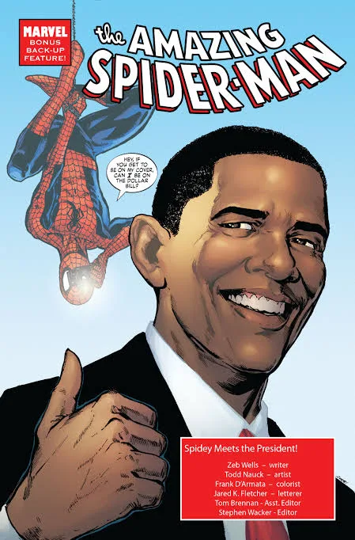
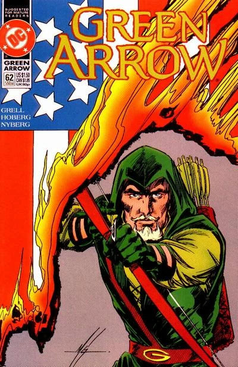
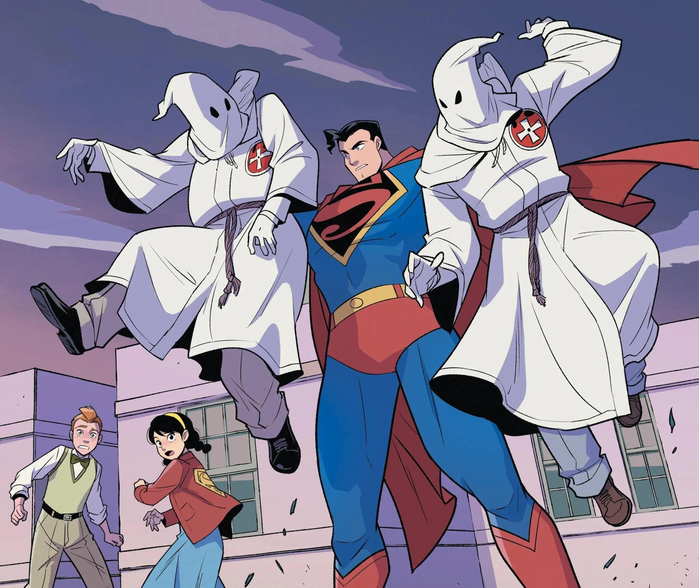
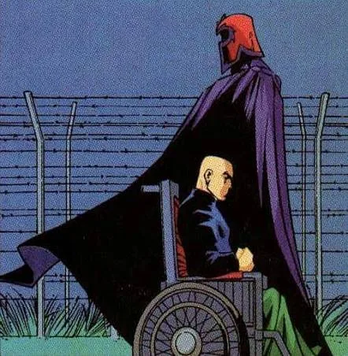
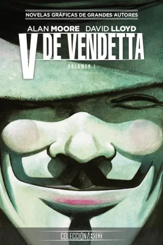
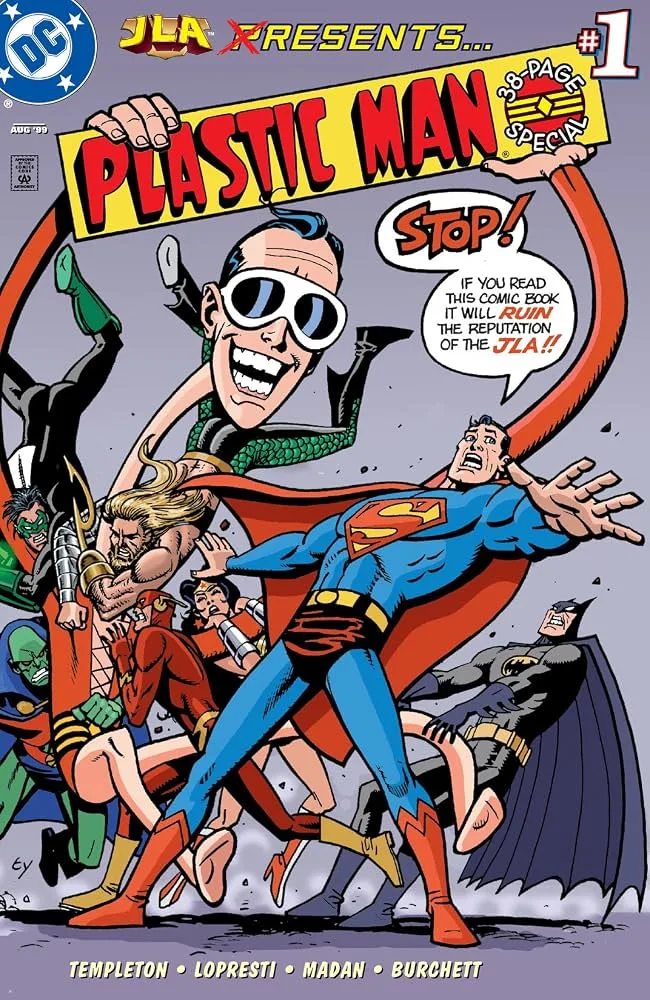

☭ IZQUIERDA, ANTIFASCISMO Y DERECHOS HUMANOS:
LOS HÉROES DE CÓMIC MÁS POLÍTICOS DE LA HISTORIA

El lloriqueo favorito del lector de cómics moderno y reaccionario es que "la política arruina las historias". Exigen una neutralidad absurda y exentan a los superhéroes de tener posturas ideológicas. Sin embargo, ese argumento se cae a pedazos con un mínimo de memoria histórica: las mejores etapas del noveno arte no solo son políticas, sino que muchos de los héroes más icónicos de la cultura pop nacieron como una respuesta directa al fascismo y la opresión de izquierda.
Lejos de combatir alienígenas en el vacío, estos personajes usan sus viñetas como un altavoz por los derechos humanos, plantándole cara al capitalismo desmedido, al racismo institucional y a los abusos del Estado. Si te molesta la política en las viñetas, es que estás leyendo con los ojos cerrados, y estos cuatro ejemplos lo demuestran.

🏹 1. Green Arrow (Oliver Queen): El socialista de la flecha verde
Oliver Queen es el máximo referente de la izquierda militante en el cómic comercial norteamericano. Durante la icónica etapa de los años 70, bajo la pluma de Denny O'Neil y los lápices de Neal Adams, el personaje sufrió un lavado de cara radical: perdió su fortuna multimillonaria, se dejó una barba de activista y se volcó por completo a las calles. "Ollie" se convirtió en la voz de la justicia social, obligando a su compañero Green Lantern (un policía cósmico defensor del orden establecido) a confrontar el racismo sistémico, la pobreza extrema y la codicia corporativa desde una perspectiva abiertamente socialista.

🦸♂️ 2. Superman: El campeón original de los oprimidos de la clase obrera
Aunque el cine y la propaganda de la Guerra Fría transformaron a Superman en un boy scout que defiende el establishment y el imperialismo estadounidense, sus orígenes en Action Comics #1 (1938) dictan algo totalmente opuesto. Creado por Jerry Siegel y Joe Shuster —dos jóvenes judíos hijos de inmigrantes y de clase trabajadora—, el Superman original era un justiciero de izquierda. En sus primeras viñetas, Clark Kent no peleaba contra supervillanos con rayos láser; destruía tugurios de empresarios que explotaban obreros, golpeaba a maridos violentos y metía a la cárcel a políticos corruptos que hacían negocios con la guerra.

❌ 3. Los X-Men: La metáfora viviente de los derechos civiles
Concebidos en los años 60 en el clímax de la lucha por los derechos civiles en Estados Unidos, los mutantes de Marvel son la alegoría perfecta de las minorías perseguidas por el prejuicio social. El racismo, la homofobia y la xenofobia no son sutiles en sus páginas: el gobierno les crea leyes de registro específicas y les construye robots gigantes (los Centinelas) para cazarlos. Novelas gráficas magistrales como Dios ama, el hombre mata no van sobre salvar el universo; son bofetadas de realidad que diseccionan el fanatismo religioso, los discursos de odio y el fascismo social que busca exterminar lo diferente.

🎭 4. V (V de Vendetta): El terrorismo anarquista contra el totalitarismo
Si queremos movernos hacia una fibra mucho más radical y antisistema, el cómic de Alan Moore y David Lloyd es la cumbre. Ambientada en una Gran Bretaña distópica caída bajo un régimen fascista de extrema derecha, la obra nos presenta a V: un terrorista poético y abiertamente anarquista. V no busca reformar el sistema ni negociar con el tirano; busca la destrucción absoluta del Estado totalitario a través de la acción directa y la insurrección popular. Es el recordatorio definitivo de que las viñetas pueden ser un manual de resistencia armada contra la opresión.
💬 Reseña ideológica: El veredicto final
Quienes exigen cómics "sin política" en realidad están exigiendo que las historias no desafíen su zona de confort ni cuestionen sus privilegios. El cómic no es entretenimiento barato e inofensivo; nació en las trincheras del antifascismo y la lucha de clases. Los superhéroes no son policías del sistema encargados de mantener el statu quo; en su mejor versión, son rebeldes que nos recuerdan que el poder siempre debe ser cuestionado y que los derechos humanos se defienden en todos los frentes, incluso en el papel.
OTROS RUIDOS

Capitán América: La pesadilla de los nacionalistas
Steve Rogers, disidente político radical.

Plastic Man: El héroe más ridículo y peligroso
El personaje más roto de los cómics.

5 cómics mexicanos que debes leer sí o sí
Obras maestras del noveno arte nacional.